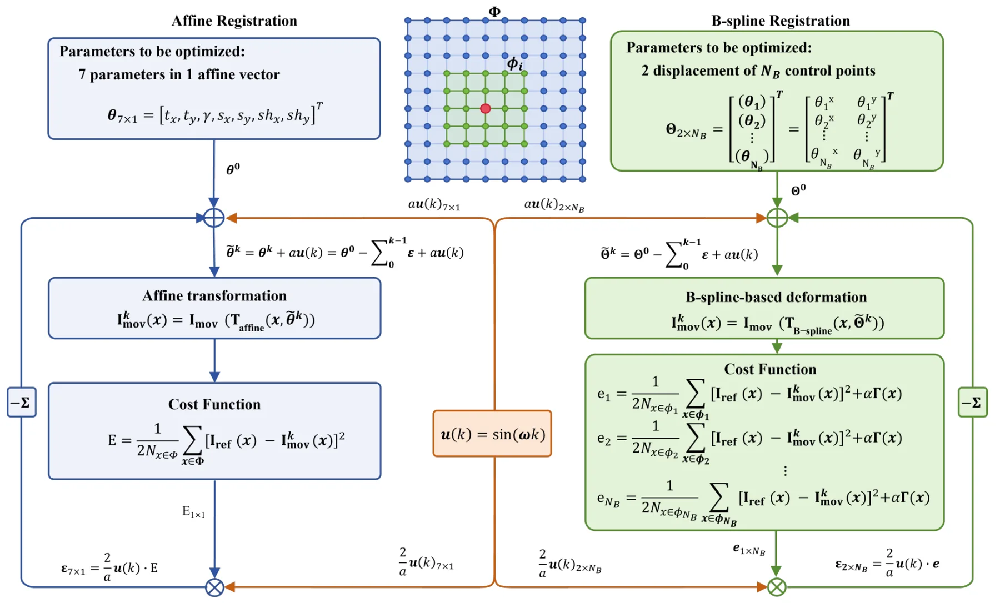
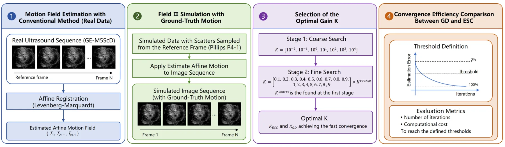
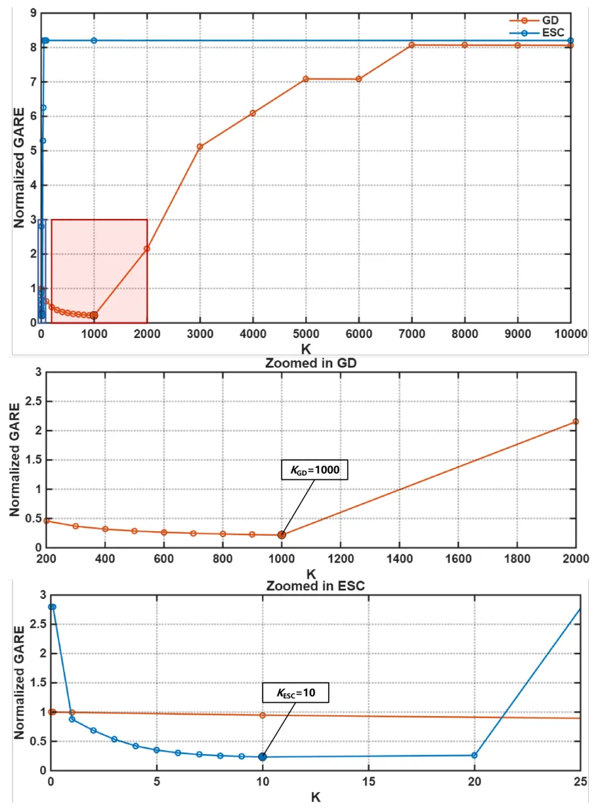
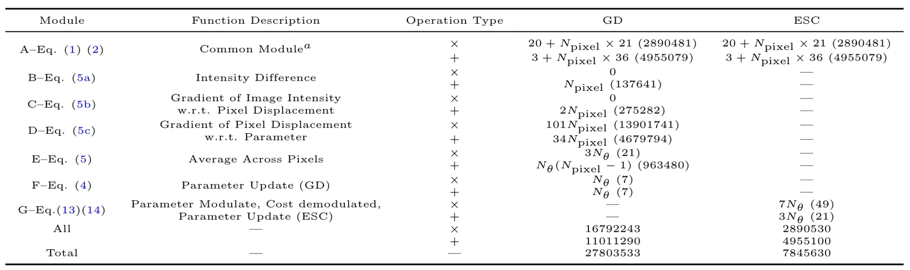

用跨迭代积分获取梯度的高效超声定位显微图像配准Efficient Image Registration for Ultrasound Localization Microscopy by Obtaining Gradients via Integration Across Iterations
核心是医学超声图像配准，与视觉里程计/SLAM 关系间接；可借鉴无显式梯度优化思想，但不是本方向重点论文。
一句话工作总结
该工作用 ESC 从跨迭代相似度扰动中估计下降方向，降低医学图像配准中显式梯度计算成本。
摘要
超声定位显微成像（ULM）需要通过图像配准进行组织运动校正。常见参数化配准会迭代更新运动参数以最大化图像相似度，优化过程通常依赖梯度，而显式计算相似度对运动参数的梯度可能很耗时。本文研究用 Extremum Seeking Control（ESC）替代显式导数评估：通过对扰动和解调后的相似度指标进行跨迭代积分来获得下降信息。作者先在由离体猪心跳动数据构造的仿真真值 affine 配准中比较 ESC 与梯度下降，结果显示 ESC 具备相近的配准精度和收敛行为，并将每迭代计算成本降低约 3.5 倍；随后把 ESC 用于 affine 全局组织运动补偿与 B-spline 局部形变校正的两阶段管线，在跳动离体猪心 ULM 上达到低于半波长衍射极限的空间分辨率。
Tissue motion correction through image registration is essential for ultrasound localization microscopy (ULM). Parametric image registration is commonly formulated as an optimization problem where motion parameters are iteratively updated to maximize image similarity, and used optimization algorithms typically rely on gradient information, the explicit evaluation of which can become computationally demanding. This work investigates Extremum Seeking Control (ESC) as an alternative to explicit derivative evaluation in image registration. By obtaining descent information via integrating perturbed and demodulated image similarity metric across iterations, ESC avoids differentiation of the image similarity metric with respect to motion parameters in each iteration. The classical ESC, whose optimization behavior approximates that of classical gradient descent (GD), is first compared with GD for affine image registration using simulated ground-truth motions derived from a beating ex vivo porcine heart dataset. The results show that ESC achieves registration accuracy and convergence behavior comparable to GD while reducing per-iteration computational cost by approximately 3.5-fold. ESC is subsequently employed in a two-stage motion correction pipeline, where affine registration compensates for global tissue motion and B-spline registration corrects residual local deformation. The proposed method is applied to ULM imaging of a beating ex vivo porcine heart and achieves a spatial resolution of 219 um, substantially below the half-wavelength diffraction limit of 321 um associated with 2.4 MHz diverging-wave imaging. These results demonstrate that ESC provides an effective alternative to explicit derivative evaluation in ULM image registration, enabling accurate motion correction and high-quality super-resolution imaging.
中文解读摘录
- 链接：abs / PDF；作者：Jipeng Yan, Chang Liu, Hengchang Liu, Biao Huang, Meng-Xing Tang, Yingxiang Liu, Ying Tan；类别：eess.IV, physics.med-ph；采集 score=10。
- 核心思路：把 Extremum Seeking Control 用于超声定位显微成像中的运动校正/图像配准，通过跨迭代扰动与解调积分获得下降方向，避免每次迭代显式计算相似度指标梯度。
- 方法要点：在仿真 affine 配准中达到与梯度下降接近的精度，同时每迭代计算成本约降低 3.5 倍；随后用于 affine + B-spline 两阶段组织运动校正管线。
- 关注点：这是医学图像配准，不是视觉里程计；可借鉴的是“无显式梯度的相似度优化”是否能启发稠密配准、非刚性配准或低成本 registration front-end。
图表/页面预览

{kind=link}

{kind=link}

{kind=link}

{kind=link}
